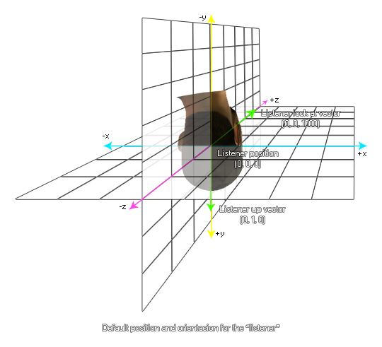

audio_listener_orientation
Changes the orientation of the listener within the audio space.
Syntax :
audio_listener_orientation(lookat_x, lookat_y, lookat_z, up_x, up_y, up_z);
| Argument | Description |
|---|
| lookat_x |
The x look vector (default 0). |
| lookat_y |
The y look vector (default 0). |
| lookat_z |
The z look vector (default 1000). |
| up_x |
The x up vector (default 0). |
| up_y |
The y up vector (default 1). |
| up_z |
The z up vector (default 0). |
Returns : N/A
Description
With this function you can change the orientation of the listener within the 3D audio space. The look at direction and up direction are based on the vectors that are resolved from
the given relative x, y and z positions (for more information on vectors, please see Maths - Vectors), and default to (0, 0, 1000) for the look at direction
and (0, 1, 0) for the up direction, as shown in the illustration below:

Changing the listener orientation with this function will change how sound created by audio emitters around the game room are preceived by the player of your game. In the example below, sounds created by the
emitter when the listener is at the default position would appear to be coming from below and to the right of the listener, but with the new position and orientation of the listener they will now be percieved as
coming from above and to the right.

Example :
xt = x + cos(degtorad(direction));
yt = y - sin(degtorad(direction));
zt = z - sin(degtorad(zdirection));
d3d_set_projection(x, y, z, xt, yt, zt, 0, 0, 1);
audio_listener_position(x, y, z)
audio_listener_orientation(xt, yt, zt, 0, 0, 1)
The above code use three variables to set the 3D camara projection and the 3D audio listener position and orientation too.
© Copyright YoYo Games Ltd. 2013 All Rights Reserved